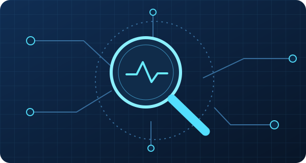
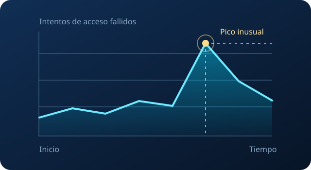

Una amenaza pone algo en riesgo
Un mensaje que intenta robar una contraseña o un archivo que altera el equipo pueden comprometer la privacidad, la disponibilidad de los datos o el control de una cuenta.
Ciberseguridad aplicada
Es el uso de señales, reglas y, en algunos sistemas, inteligencia artificial para reconocer situaciones que podrían poner en riesgo nuestras cuentas, dispositivos o datos.

Un mensaje que intenta robar una contraseña o un archivo que altera el equipo pueden comprometer la privacidad, la disponibilidad de los datos o el control de una cuenta.
Una dirección extraña, una solicitud inesperada o un inicio de sesión fuera de lo habitual merecen verificación. Cada indicio tiene que interpretarse en su contexto.
Podemos evitar abrir un archivo, verificar un mensaje por un canal oficial o alertar al equipo de soporte antes de que el incidente se propague.
Usamos correo, redes sociales, servicios en línea y plataformas educativas a diario. En esos mismos espacios circulan fraudes, intentos de robo de información y descargas peligrosas. Un estudiante puede perder acceso al aula virtual, una persona puede sufrir un fraude y una empresa puede ver interrumpida su operación.
La educación digital ayuda a reconocer señales y verificar el origen antes de actuar. Los filtros y las alertas tecnológicas facilitan revisar lo urgente. El contexto y el criterio de las personas permiten decidir cómo responder.
Desarrollar una plataforma web educativa que permita comprender las principales amenazas digitales y demostrar, mediante ejemplos interactivos, cómo pueden identificarse señales de riesgo utilizando criterios de seguridad digital y conceptos de inteligencia artificial.
Imagina que el registro de acceso de una plataforma muestra un pico de intentos fallidos. Primero se reúnen y preparan los eventos de varios sistemas. Luego se comparan con el comportamiento habitual. El equipo de seguridad revisa el motivo de la alerta y decide si hace falta intervenir.
Un pico puede deberse a una contraseña olvidada o a un fallo del servicio. La alerta indica qué conviene revisar, y el contexto permite decidir si hay un incidente.

Un sistema puede analizar grandes volúmenes de mensajes y registros, reconocer patrones sospechosos y señalar comportamientos anómalos, como un acceso en un horario inusual. También puede clasificar mensajes potencialmente fraudulentos y ayudar a los equipos de seguridad a priorizar alertas.
El sistema compara la dirección del remitente y las características del mensaje con reglas o patrones conocidos.
Un acceso inesperado o varios intentos fallidos pueden generar una alerta para verificar la actividad de la cuenta.
El equipo revisa las señales, confirma el contexto y decide si conviene reportar, bloquear o cerrar la alerta.
Un falso positivo ocurre cuando se señala una actividad legítima. Un falso negativo ocurre cuando una amenaza pasa inadvertida. La IA puede cometer ambos errores y no garantiza detectar todas las amenazas. Las alertas necesitan verificación humana.
Recursos institucionales para profundizar. La comprobación de los enlaces desde el entorno de desarrollo está pendiente.